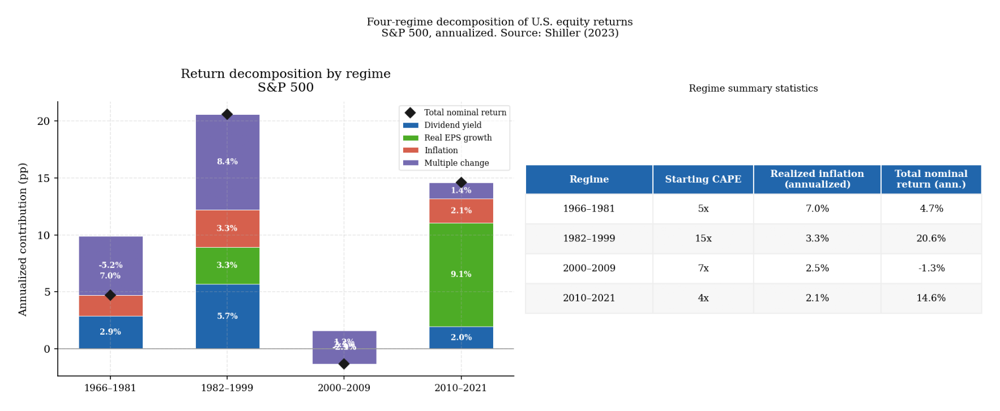
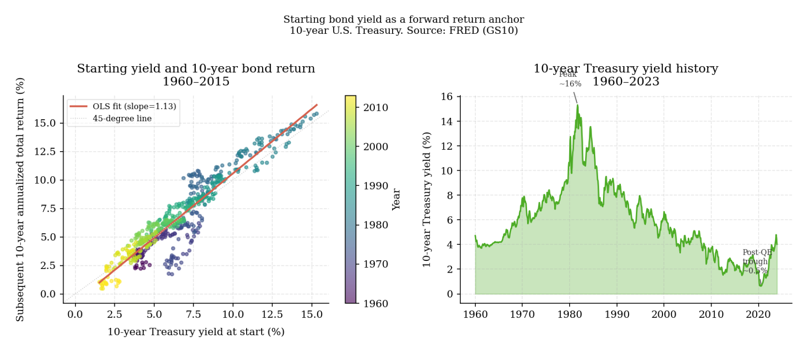
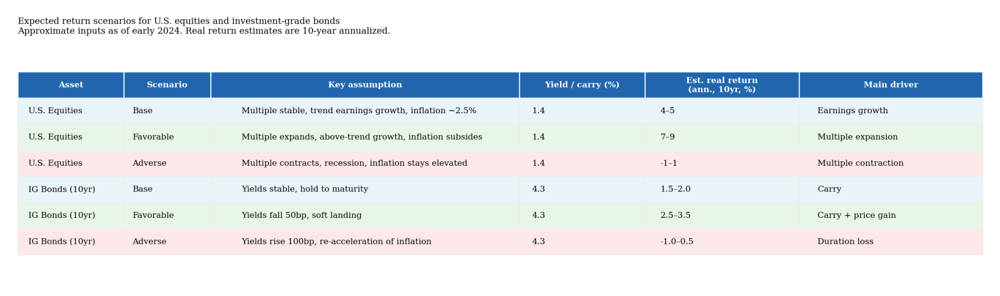

6. Expected returns: what the portfolio should earn from here
A portfolio can be well-constructed around genuine return sources and still disappoint if those return sources are expensively priced at the point of entry. The question of what a portfolio should be expected to earn from here — given current valuations, current carry, and the prevailing macro regime — is where investment process most often becomes imprecise. It is also where the most consequential errors are made, because a return assumption that is too optimistic will cause a portfolio to be sized too aggressively, diversified too narrowly, and held through adverse conditions that the investor did not honestly anticipate.
The answer is not a single number. Expected return is an estimate under uncertainty, and the uncertainty is large enough that expressing it as a point forecast creates false precision. But that does not make the exercise arbitrary. The most important inputs — starting valuation, current carry, and the macro regime — are all observable. A framework that begins from those observable inputs and states its assumptions explicitly is more honest and more useful than one that either projects recent returns forward or applies an unconditional historical average as if current conditions were irrelevant.
The practical purpose of this section in the framework is threefold. First, it provides the forward-looking standard against which the passive core from section 7 should be evaluated: is the broad market exposure in the core priced to earn a return commensurate with its risk? Second, it provides the arithmetic for comparing active additions against that baseline: does a factor tilt, a systematic overlay, or a diversifying strategy improve the forward return of the portfolio in a way that justifies its cost? Third, it establishes the regime conditioning that determines when the answer to both questions changes.
The arithmetic identity: which component is doing the work
The most useful discipline for equity return estimation is a decomposition that forces the forecaster to state explicitly which element of return is being relied upon. Long-run equity return can be approximated as:
\[\text{Return} \approx \text{Starting yield} + \text{Real earnings growth} + \text{Inflation} + \text{Change in valuation multiple}\]
This is the Arnott and Bernstein decomposition (Arnott and Bernstein 2002). Each component is observable or estimable independently. Starting yield is the current dividend yield. Real earnings growth per share is estimable from long-run trend productivity and demographics. Inflation is the expected price level change. And the multiple change is the residual — the contribution from repricing that cannot be known in advance but can be bounded by asking what starting valuation implies about its likely direction.
The discipline the decomposition provides is this: it prevents a return forecast from being dominated by an assumption that has been smuggled in rather than stated. The most common smuggled assumption is that the valuation multiple will remain stable or continue expanding from its current level. If the starting CAPE is 30x and long-run average real earnings growth is 1.5 percent and the current dividend yield is 1.5 percent, the arithmetic return available from those two components is approximately 3 percent in real terms before any multiple change. If the investor’s return assumption is 7 percent real, the remaining 4 percent must come from multiple expansion — an assumption that should be stated explicitly and defended, not embedded silently in a forward projection.
The chart below applies this decomposition to four major historical regimes for the S&P 500. The dominant contributor differs substantially by period. In 1982–1999 the exceptional returns were driven primarily by multiple expansion as the CAPE rose from approximately 8x to 44x — a repricing that was by definition unrepeatable from the conditions it produced. In 1966–1981 multiple contraction and inflation erosion dominated, producing near-zero real returns despite positive earnings growth. The 2000–2021 regime delivered solid earnings growth but modest multiple change, leaving dividend yield and inflation as primary contributors to total nominal return. Reading these regimes backward as an unconditional average, and then applying that average as a forward forecast, imports all their favorable and unfavorable conditions into the projection without examination.
Starting valuation: the anchor for long-horizon equity return
The empirical case for starting valuation as a predictor of long-run equity returns is among the strongest in empirical finance. Campbell and Shiller’s work using the cyclically adjusted price-to-earnings ratio — CAPE, defined as the current price divided by the ten-year average of real earnings — showed that starting valuation explains a substantial fraction of the variance in subsequent ten-year real equity returns (Campbell and Shiller 1998). The relationship is not useful for short-run timing: CAPE has little predictive power at one- or two-year horizons, and the market can continue rising from elevated valuations for extended periods. But at seven to ten year horizons, the relationship between starting valuation and subsequent real return has been persistent across multiple markets and long data samples.
The scatter below shows this relationship for the S&P 500 across the full sample from 1881 to 2015. Each point represents a monthly starting observation. The downward-sloping OLS fit confirms the valuation logic: higher starting multiples have historically been associated with lower subsequent returns. Starting from a CAPE of 44x in January 2000 was followed by a negative real return over the subsequent decade. Starting from a CAPE of 8x in January 1982 was followed by exceptional returns. The dispersion around the fit is wide enough that CAPE cannot be used as a short-run timing signal — but at long horizons it is the single most informative conditioning variable available.
The mechanism is the arithmetic identity: when the CAPE is elevated, the dividend yield is compressed and the multiple must stay elevated or expand further for the historical average return to be achieved. At CAPE levels above 25x — where the U.S. market has spent much of the period since 2015 — the arithmetic requires either above-trend earnings growth, continued multiple expansion, or the investor accepting a lower forward return than history suggests. That is not a bearish prediction. It is a conditional statement about what the arithmetic requires.

Starting yield: the anchor for fixed-income return
For high-quality fixed-income instruments, starting yield is the most informative single number available for medium- to long-horizon return estimation. If a bond is held to maturity and does not default, the total nominal return equals the yield at purchase. At horizons shorter than maturity, mark-to-market returns deviate as rates move, but the starting yield exerts a gravitational pull that strengthens as the holding period extends. Ilmanen documents this empirically: the correlation between starting yield and subsequent five- to ten-year total return for investment-grade bonds is high enough that starting yield functions as a reasonable central estimate for medium-horizon return planning (Ilmanen 2012).
The chart below shows this relationship for the 10-year U.S. Treasury since 1960. The scatter on the left confirms the strong positive relationship between starting yield and forward return — consistent with the yield-as-anchor mechanism. The right panel shows the yield history, making visible the two key distortions: the 1981 peak at approximately 16 percent, which preceded exceptional bond returns as yields fell for the following four decades; and the 2020 trough at approximately 0.5 percent, which implied near-zero or negative real forward returns from that starting point regardless of subsequent policy.
An investor who allocated to ten-year Treasuries in mid-2020 on the basis of the prior decade’s realized bond returns — which included large capital gains as yields fell from 4 percent to 0.5 percent — was conflating one-time capital gains from yield compression with repeatable carry. The carry available from the 0.5 percent instrument was the yield, not the yield plus further expected decline. When yields subsequently rose sharply in 2022, long-duration bonds fell approximately 30–35 percent — a loss of equity-like magnitude from an instrument classified as safe. The classification was correct about credit quality. It was incorrect about interest rate risk in a regime where the starting yield had no room to continue falling.

How macro regimes change the arithmetic
The decomposition above treats expected return as a calculation performed on observable starting conditions. That is necessary but insufficient. Starting conditions are measured at a point in time, and the path from those conditions to realized outcomes runs through a macro regime that shapes whether the arithmetic works as expected.
A regime is a configuration of growth momentum, inflation, real interest rates, credit availability, and policy stance that tends to persist for years and that changes the distribution of returns available from any given starting valuation. The same CAPE of 20x produces different expected outcomes in a disinflationary growth environment, a stagflationary environment, and a credit-stress environment, even if the starting number is identical.
Cochrane’s work on discount rate variation is the theoretical anchor for this mechanism: most of the time-series variation in aggregate equity returns is explained by variation in discount rates rather than by variation in expected cash flow growth (Cochrane 2011). A change in the inflation and policy regime is not merely a perturbation around trend equity returns — it is the primary driver of medium-horizon realized returns because it changes the discount rate applied to every future cash flow in the portfolio simultaneously.
The four regimes in the decomposition chart above illustrate this. The 1966–1981 inflationary regime destroyed real returns on long-duration assets despite positive earnings growth because the discount rate applied to those earnings rose sharply. The 1982–2000 disinflationary expansion rewarded both equities and bonds through falling discount rates and strong earnings growth — a combination that was the mirror image of the preceding period. The 2000–2009 period saw the unwinding of the 1990s valuation excess compounded by a leverage-driven credit crisis. The 2010–2021 period of quantitative easing and zero real rates sustained multiple expansion across nearly all asset classes while simultaneously compressing future expected returns from the higher prices those conditions produced.
For a systematic multi-asset portfolio that holds equity futures, bond futures, gold, and silver — as the strategy connected to this framework does — regime awareness is directly operational. Equity futures expose the portfolio to discount rate changes as well as earnings growth. Bond futures are sensitive to the inflation and policy stance that determines the yield level. Gold and silver behave differently across regimes than financial assets, providing exposure that is most valuable in inflationary regimes where the core financial asset premia are compressed. A forward return estimate that does not condition on which regime the portfolio is entering will systematically overestimate return in adverse regimes and underestimate it in favorable ones.
Working in ranges and identifying the key assumption
Any honest approach to expected return must acknowledge that the estimates carry substantial uncertainty. The practical response is not to widen error bars until the exercise becomes meaningless but to construct a scenario range that identifies which assumption is doing most of the work in the central estimate.
In equities, the three drivers that most commonly separate the base case from the adverse case are the path of real earnings growth, the level at which the valuation multiple stabilizes, and the trajectory of real interest rates. In fixed income, the equivalent is the path of inflation and the level at which policy rates settle. For each scenario, the arithmetic identity provides the structure: return is yield plus growth plus multiple change, and the case for each scenario is a statement about what values those components are assumed to take.
The scenario table below applies this structure to U.S. equities and investment-grade bonds using approximate market conditions as of early 2024. The table makes explicit which assumption drives each scenario. If the base case expected return is only attractive because it assumes the current CAPE is sustained, that should be visible. If the adverse case produces a negative ten-year real return, that too should be stated plainly rather than absorbed into a central estimate that obscures the range.

References
Arnott, Robert, and Peter Bernstein. 2002. “What Risk Premium Is ‘Normal’?” Financial Analysts Journal 58 (2): 64–85. https://www.researchaffiliates.com/content/dam/ra/publications/pdf/p-2012-jan-expected-return.pdf.
Campbell, John Y., and Robert J. Shiller. 1998. “Valuation Ratios and the Long-Run Stock Market Outlook.” The Journal of Portfolio Management 24 (2): 11–26. https://www.econ.yale.edu/~shiller/online/jpmalt.pdf.
Cochrane, John H. 2011. “Presidential Address: Discount Rates.” The Journal of Finance 66 (4): 1047–108. https://paulgp.com/speeches/cochrane_2011_afa.pdf.
Ilmanen, Antti. 2012. Expected Returns on Major Asset Classes. CFA Institute Research Foundation. https://rpc.cfainstitute.org/sites/default/files/-/media/documents/book/rf-publication/2012/rf-v2012-n1-1-pdf.PDF.